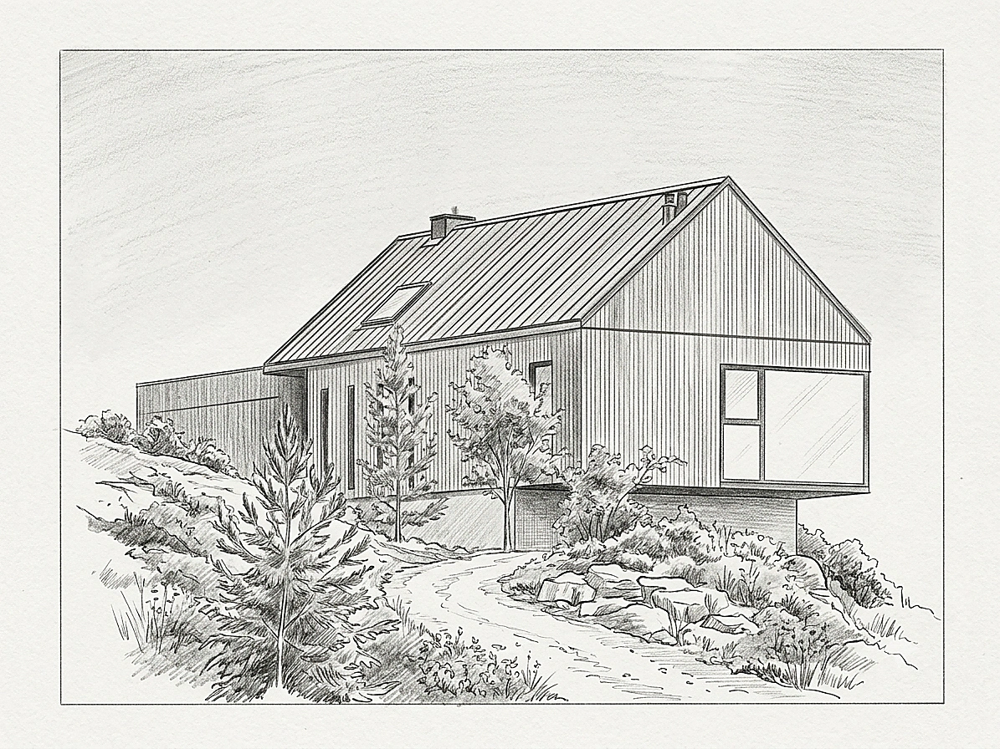
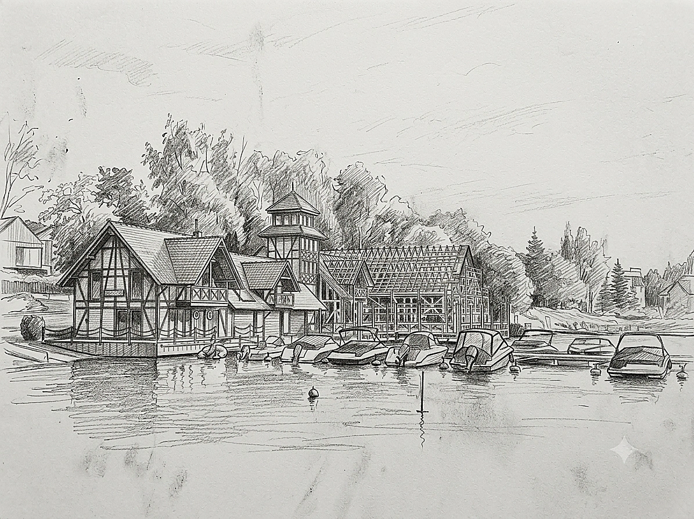
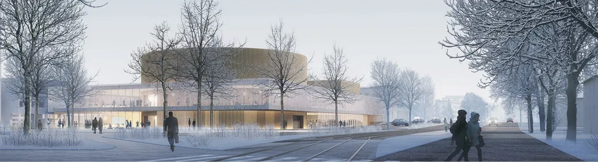
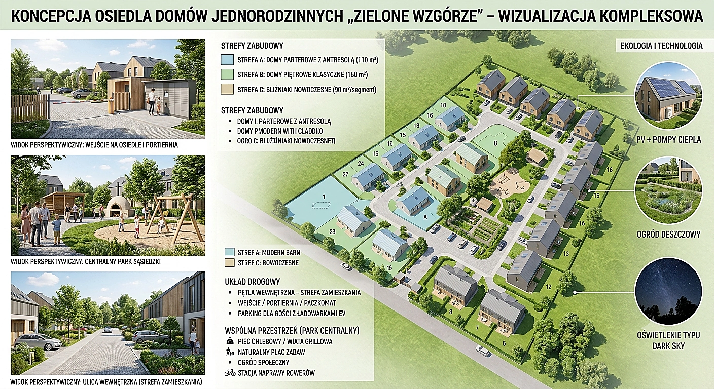
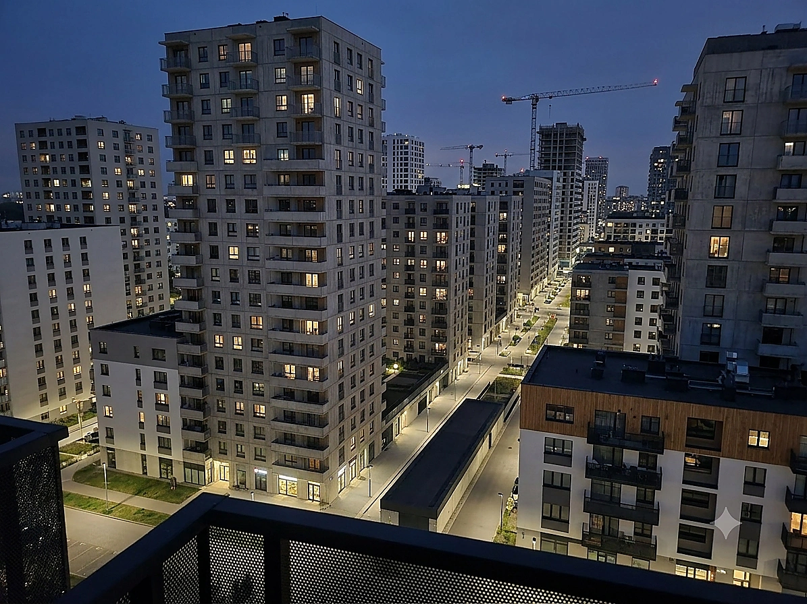

Obiekt użyteczności publicznej — projekt konkursowy
Innowacyjna wizja architektoniczna nowoczesnego obiektu publicznego

Parametry Projektu Tabela Danych
Wizja architektoniczna i zasady zrównoważonego projektowania
Koncepcja opracowana na potrzeby konkursu architektonicznego, wyróżniająca się wysoką jakością architektury, przemyślanymi rozwiązaniami funkcjonalnymi oraz harmonijnym wpisaniem w otaczającą przestrzeń. Projekt stawia na przyjazność użytkownikom, dostępność dla osób ze szczególnymi potrzebami, energooszczędność oraz możliwość efektywnej realizacji. Opracowany z uwzględnieniem zasad zrównoważonego projektowania.
Struktura obiektu łączy otwarte, doświetlone światłem dziennym atria z modułowym podziałem sal multifunkcyjnych, stref obsługi mieszkańców oraz przestrzeni spotkań. Zastosowano rozwiązania pasywne redukujące zapotrzebowanie na energię, zielone dachy retencyjne oraz naturalne materiały wykończeniowe o niskim śladzie węglowym.
Kluczowe usługi w ramach projektu konkursowego:
Plansze konkursowe
Profesjonalne plansze graficzne o wysokiej czytelności wizualnej: rzuty, przekroje, schematy ideowe oraz narracja koncepcyjna dopasowana do wymagań sądu konkursowego.
Analiza funkcjonalna
Optymalizacja podziału stref publicznych, biurowych i technicznych, bezkolizyjny przepływ osób oraz pełna integracja wytycznych dostępności (dla osób ze szczególnymi potrzebami).
Układ przestrzenny
Innowacyjne trójwymiarowe ukształtowanie bryły, ergonomia wnętrz, naturalne doświetlenie stref pracy i relaksu oraz optymalne powiązanie z tkanką miejską.
Zagospodarowanie terenu
Projekt układu komunikacji pieszo-jezdnej, mała architektura, place publiczne, integracja z zielenią parkową oraz systemy błękitno-zielonej infrastruktury retencyjnej.
Materiały prezentacyjne
Fotorealistyczne wizualizacje 3D (ujęcia dzienne i nocne), schematy aksonometryczne, przekroje perspektywiczne oraz syntetyczny opis techniczny i środowiskowy.
Galeria projektu, plansze i pliki powiązane
Syntetyczna perspektywa fasady i bryły w otoczeniu zieleni miejskiej.

Reprezentacyjna strefa wejściowa z bezbarierowym dostępem dla pieszych.

Koncepcja punktu informacji publicznej i nowoczesnej strefy spotkań.

Koncepcja oświetlenia fasady oraz integracja z przestrzenią miejską zimą.

Harmonijna skala budynku w relacji do ruchu pieszego i rowerowego.

Przestrzeń relaksu i zieleni wkomponowana w otoczenie obiektu publicznego.
Zaplanujmy optymalną inwestycję budowlaną
Skonsultuj założenia architektoniczne, wskaźniki intensywności zabudowy i decyzje środowiskowe bezpośrednio z głównym projektantem.